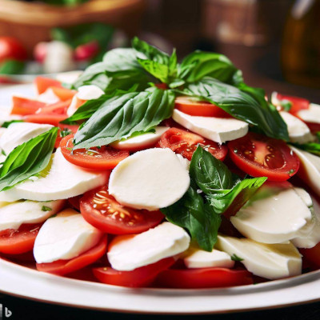
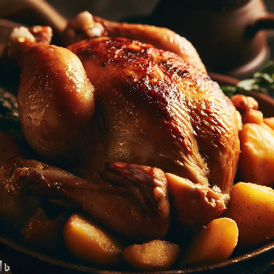

Salada Caprese

- 2 tomates grandes e maduros
- 200g de queijo mussarela de búfala
- Folhas de manjericão fresco
- Azeite de oliva extra virgem
- Vinagre balsâmico
- Sal e pimenta a gosto
Modo de preparo
Corte os tomates e a mussarela em rodelas. Em um prato, intercale as rodelas de tomate e mussarela.
Adicione as folhas de manjericão por cima. Tempere com sal e pimenta a gosto. Regue com azeite de
oliva e algumas gotas de vinagre balsâmico. Sirva como entrada ou acompanhamento
Frango Assado com Batatas

- 4 coxas de frango
- 4 batatas médias cortadas em rodelas grossas
- 4 dentes de alho picados
- Suco de 1 limão
- 2 colheres de sopa de azeite de oliva
- Sal, pimenta e temperos a gosto (páprica, alecrim, orégano, etc.)
Modo de preparo
Em uma tigela, tempere o frango com o alho picado, suco de limão, azeite, sal, pimenta e os temperos de sua escolha. Deixe marinar por pelo menos 30 minutos. Enquanto isso, pré-aqueça o forno a 200°C. Em uma assadeira, coloque as rodelas de batata e por cima disponha as coxas de frango. Leve ao forno por aproximadamente 40 minutos ou até que o frango esteja dourado e as batatas estejam macias.